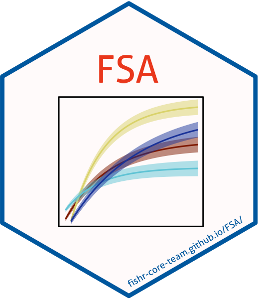

FSA (Fisheries Stock Assessment) 
The FSA package provides R functions to conduct typical introductory fisheries analyses. Example analyses that use FSA can be found in the Introductory Fisheries Analyses with R book (see note below) and on the fishR website. Please cite FSA if you use FSA in a publication.
Installation
The most recent stable version from CRAN may be installed with
install.packages("FSA")The development version may be installed from GitHub with
if (!require('remotes')) install.packages('remotes'); require('remotes')
remotes::install_github('fishR-Core-Team/FSA')You may need R Tools installed on your system to install the development version from GitHub. See the instructions for (R Tools for Windows or R Tools for Mac OS X).
Questions / Comments / Problems or Contributions
Report questions, comments, or bug reports on the issues page.
We are always looking for others to contribute to FSA. Please feel free to make a pull request via GitHub or to contact the maintainers.
Please adhere to the Code of Conduct.
Note about FSA and Introduction to Fisheries Analysis with R book
Versions of FSA beginning with v0.9.0 may no longer work as shown in the IFAR book. Many functions have not changed from when the book was published, but some have. Thus, you will need to install an FSA version before v0.9.0 to be assured that functions work as described in the IFAR book.